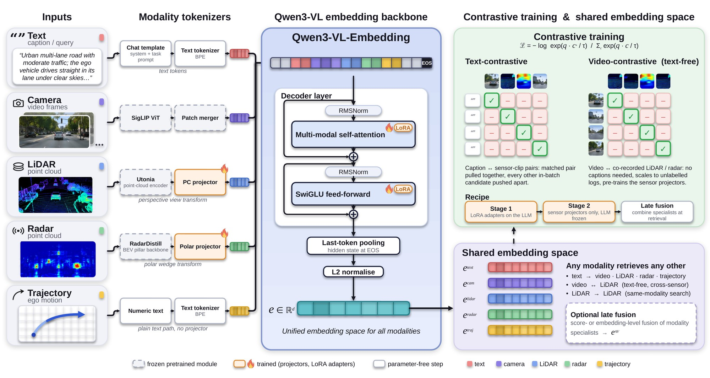
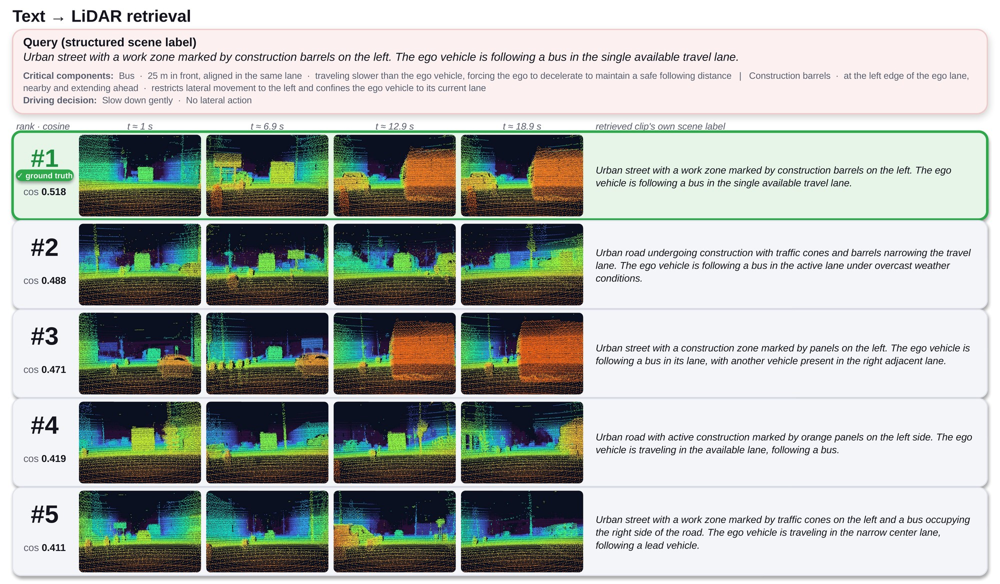
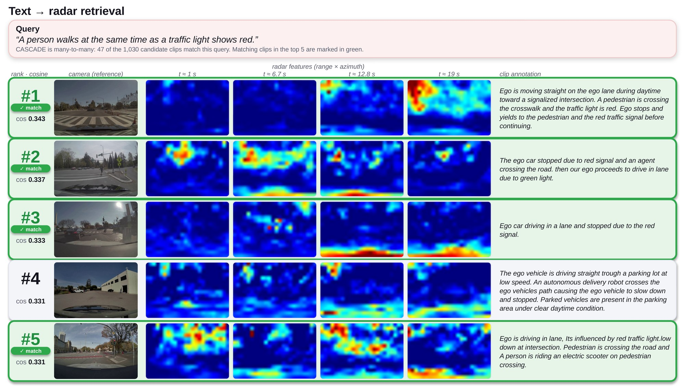
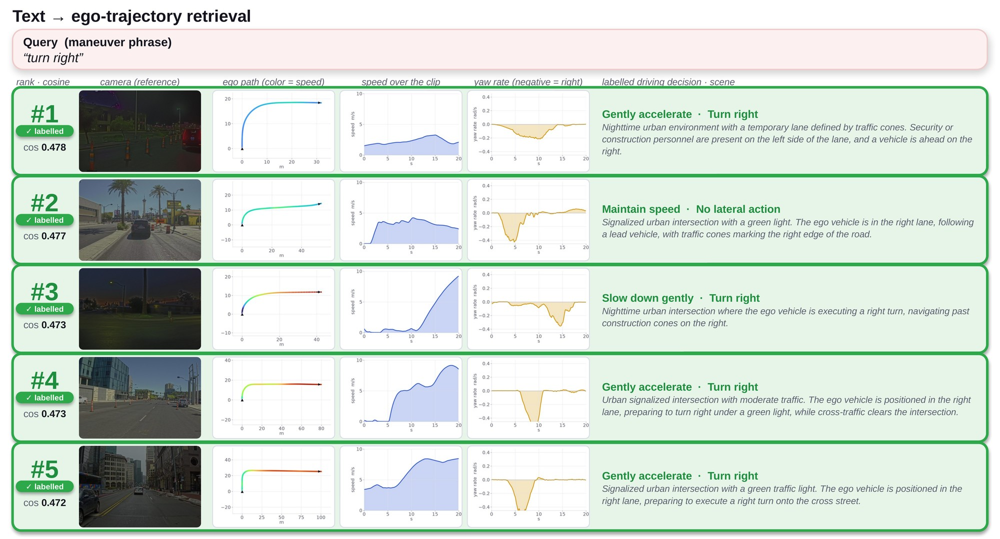

Mining large-scale driving logs plays a key role in the development and evaluation of models for autonomous driving. Multimodal embedding models are an attractive solution for this task, directly embedding raw video clips into a shared semantic latent space, allowing for straightforward semantic search. However, existing models primarily support conventional modalities, leaving critical autonomous driving sensor modalities, such as LiDAR and radar, unsupported. To address this gap, we introduce EmbedAnythingAV, the first demonstration of how to extend a general-purpose embedding model to novel LiDAR, radar and ego trajectory modalities for autonomous driving. Building on Qwen3-VL-Embedding, we extend its architecture with dedicated LiDAR and radar processing streams, leveraging modality-specific encoders and tokenization schemes to generate ingestible point cloud representations for the model backbone. Ego trajectories are incorporated through an engineered template structure that transforms the trajectories into a text sequence that is compatible with the existing text encoder. To accommodate differing levels of language supervision within driving data, we investigate two training strategies for EmbedAnythingAV: supervised contrastive learning, in which new modalities are directly supervised with text descriptions, and video-mediated contrastive learning, in which video is exploited as a bridge modality through LiDAR-video and radar-video contrastive learning. To evaluate our model's capabilities, we construct two retrieval benchmarks from the nuReasoning and CASCADE datasets, supporting text-to-video, text-to-LiDAR, text-to-trajectory, and, for CASCADE, text-to-radar retrieval. On these benchmarks, we demonstrate (1) successful semantic retrieval of the novel sensor modalities, achieving up to 86% of the video retrieval score for LiDAR and up to 56% for radar and (2) improvement over the video-only baseline using a linear late fusion scheme to combine multiple modality embeddings.

Overview of the EmbedAnythingAV architecture and training recipe.
Each modality is converted into tokens for a shared Qwen3-VL-Embedding backbone. Text and camera video use the backbone's native text tokenizer and SigLIP vision encoder. LiDAR point clouds are encoded by a frozen Utonia point-cloud encoder and radar by a frozen RadarDistill BEV pillar backbone, each followed by a trained projector that maps features into the backbone's token space. Ego trajectories are written out as numeric text and use the text path directly. Every modality produces an L2-normalized embedding via last-token pooling, so a dot product is a cross-modal similarity.
The model is trained with an InfoNCE contrastive loss, either against captions (text-contrastive) or, when captions are unavailable, against co-recorded video (video-contrastive), which lets the sensor projectors train on unlabelled driving logs. At retrieval time, embeddings from multiple modalities can optionally be combined by late fusion.
We evaluate text-to-scene retrieval on two benchmarks built from the nuReasoning and CASCADE datasets, comparing against zero-shot, video-only embedding models.
On nuReasoning, EmbedAnythingAV-S, trained with supervised contrastive learning, more than doubles the MRR of the strongest zero-shot video baseline (0.666 vs. 0.297 for WeMM-9B). The new sensor modalities are directly searchable from text: LiDAR alone reaches 0.484 MRR and 0.782 R@10, compared to 0.908 R@10 for video. Trajectory alone is much weaker on these scene-level queries (0.029 MRR). Fusing LiDAR with video improves on video alone in MRR, R@1, and R@5, with the best R@1 (0.551); combining trajectory, LiDAR, and video gives the best MRR (0.676) and R@5 (0.852).
On CASCADE, EmbedAnythingAV-U, trained with video-mediated contrastive learning, retrieves LiDAR and radar from text with 0.096 and 0.063 mAP, compared to 0.111 for the strongest video-only baseline. Every fused combination matches or exceeds all video-only baselines, with video + LiDAR achieving the best R-Precision (0.117).
| Approach | Modalities | MRR | R@1 | R@5 | R@10 |
|---|---|---|---|---|---|
| EmbeddingGemma-2 | Video | 0.112 | 0.053 | 0.158 | 0.218 |
| Qwen3-VL-Embedding-2B | Video | 0.147 | 0.084 | 0.194 | 0.274 |
| Qwen3-VL-Embedding-8B | Video | 0.227 | 0.137 | 0.315 | 0.400 |
| WeMM-9B | Video | 0.297 | 0.188 | 0.399 | 0.514 |
| EmbedAnythingAV-S | Video | 0.666 | 0.540 | 0.834 | 0.908 |
| LiDAR | 0.484 | 0.336 | 0.669 | 0.782 | |
| Trajectory | 0.029 | 0.008 | 0.023 | 0.048 | |
| LiDAR, Video | 0.675 | 0.551 | 0.846 | 0.906 | |
| Trajectory, Video | 0.665 | 0.539 | 0.831 | 0.910 | |
| Trajectory, LiDAR, Video | 0.676 | 0.549 | 0.852 | 0.909 |
Retrieval results on the nuReasoning retrieval benchmark, encompassing zero-shot, single-modal, and fused performance.
| Approach | Modalities | mAP | R-Precision |
|---|---|---|---|
| EmbeddingGemma-2 | Video | 0.075 | 0.074 |
| Qwen3-VL-Embedding-2B | Video | 0.089 | 0.088 |
| Qwen3-VL-Embedding-8B | Video | 0.111 | 0.114 |
| EmbedAnythingAV-U | LiDAR | 0.096 | 0.097 |
| Radar | 0.063 | 0.064 | |
| Trajectory | 0.042 | 0.036 | |
| Video, LiDAR | 0.115 | 0.117 | |
| Video, Radar | 0.113 | 0.114 | |
| Video, Trajectory | 0.115 | 0.115 |
Retrieval results using the CASCADE dataset validation queries.
Below we show the top-5 retrievals for text queries against LiDAR, radar, and ego trajectory clips.

Text → LiDAR retrieval on nuReasoning: top-5 retrieved LiDAR clips for a text query, shown with cosine similarity and each clip's own scene label. The ground-truth clip is ranked first.

Text → radar retrieval on CASCADE: top-5 retrieved radar clips for a text query, shown with a reference camera frame, radar features over time, and each clip's annotation. CASCADE is many-to-many; matching clips are outlined in green.

Text → ego-trajectory retrieval on nuReasoning: top-5 retrieved clips for a maneuver query, shown with the ego path, speed, and yaw rate over each clip, alongside the labelled driving decision. Matching clips are outlined in green.